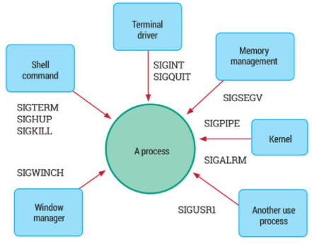
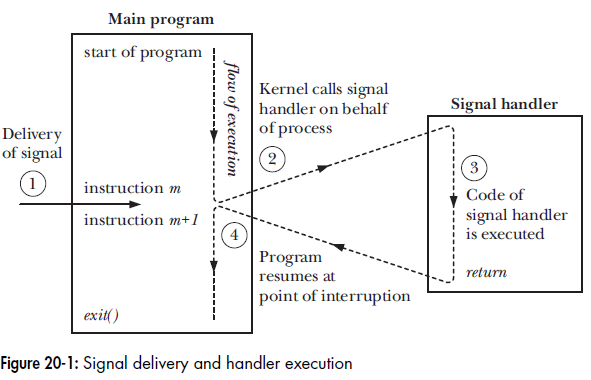
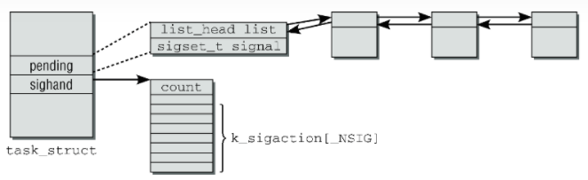
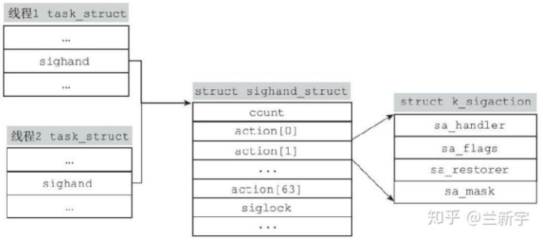
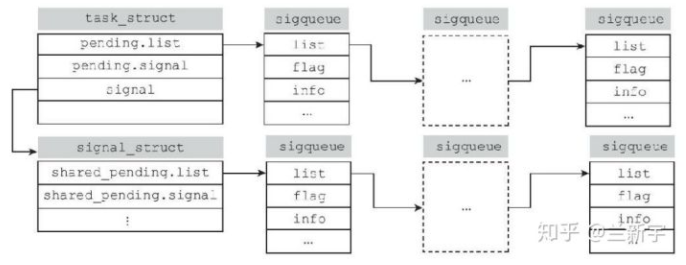

A signal is a notification to a process that an event has occurred. Signals are sometimes described as software interrupts.
Process can send a signal to another process (or to itself).
Kernel can send signals to a process, with below scenarios:

Signal handler is executed by the kernel.

Refer to Kernel Internals
signal() - not portable
sighandler_t signal(int signum, sighandler_t handler);
WARNING: the behavior of signal() varies across UNIX versions, and has also varied historically across different versions of Linux. Avoid its use: use sigaction(2) instead.
sigaction() system call
The sigaction() system call provides more control and flexibility than signal() when setting the disposition of a signal.
sigaction(int sig, const struct sigaction* act,struct sigaction* oldact)
sig: can’t be SIGKILL or SIGSTOP.act is NULL, oldact returns the current disposition.oldact can be NULL if we are not interested in it.struct sigaction {
void (*sa_handler)(int);
sigset_t sa_mask;
int sa_flags;
...
};
kill(pid_t pid, int sig)
pid, kill() fails and sets errno to ESRCH (“No such process”).pid==0, it sends signal to all processes in current process group.pid<-1, it sends signal to all processes in process group of "-pid".kill() fails, setting errno to EPERM.If the sig argument is specified as 0 (the so-called null signal), then no signal is sent. Instead, kill() merely performs error checking to see if the process can be signaled. It can be used to to verify the existence of target PID.
raise(int sig)
send a signal to itself
kill(getpid(), sig)pthread_kill(pthread_self(), sig)killpg(pid_t pgrp, int sig)
sends a signal to all of the members of a process group, it is equivalent to kill(-pgrp, sig).
无论是kill()还是sigqueue()，都只能向进程发送信号，在Linux中，要向进程内的线程发送信号，需要使用tkill()或者tgkill()：
int tkill(int tid, int sig);
int tgkill(int tgid, int tid, int sig);
两个函数中，"tid"都是代表目标线程的PID，但tgkill()比tkill()多了一个"tgid"的参数。"tgid"是目标线程所在进程的PID，它可以用来防止向错误的线程发送信号。
发送方给目标线程发送信号时，可能目标线程已经因为某种原因退出了，按照Linux中PID的分配规则，退出线程/进程的PID可被分配给其他的线程/进程使用。这种情况下，如果使用tkill()，就可能出现将信号发送到不相干的线程上。引入"tgid"可以帮助进行目标线程所在进程的校验，这样出现错发的可能性就被大大地降低了。
Advantages:
SIGRTMIN (35), as LinuxThreads use 32-24 internally.RLIMIT_SIGPENDING soft resource limit defines a limit on the number of signals that can be queued to all processes owned by a particular real user ID.Sending realtime signals:
sigqueue(pid_t pid, int sig, const union sigval value)
realtime signals can be sent with kill() too, but without sigval, and it is not portable. Non-realtime signals can be sent with sigqueue() too, but the signal will not be queued.
Handing realtime signals:
SA_SIGINFO flag.Pending signals
The set of pending signals is only a mask; it indicates whether or not a signal has occurred, but not how many times it has occurred. If multiple of the same signal are generated while being blocked, it is only delivered once later when the signal is unblocked.
Even if a process doesn’t block signals, it may receive fewer signals than are sent to it. This can happen if the signals are sent so fast that they arrive before the receiving process has a chance to be scheduled for execution by the kernel, with the result that the multiple signals are recorded just once in the process’s pending signal set.
Blocked signals
For each process, the kernel maintains a blocked signal mask—a set of signals whose delivery to the process is currently blocked. If a signal is blocked, delivery of that signal is delayed until it is unblocked by being removed from the process signal mask.
sigprocmask()If a process receives a signal that it is currently blocking, that signal is added to the process’s set of pending signals bit mask.
sigpending()When a signal is delivered?
For asynchronou signals, Kernel delivers a pending signal to a process only at the next switch from kernel mode to user mode while executing that process. Which means below two cases:
在内核将CPU的控制权交还给用户进程之前，内核会查看进程对应的的TIF_SIGPENDING标志位，以判断即将执行的这个进程有无pending的信号需要处理。每次进程对应的bitmap和pending队列发生变化时，TIF_SIGPENDING标志位都会被重新计算，这样在发生切换的时候，内核就可以快速做出判断。
Signal delivery order
The delivery order and queuing characteristics of signals caught by a signal handler:
Interruption of system calls
When system call is blocked, the signal for which we established a handler is delivered, and its signal handler is invoked. What to do after the signal handler returns?
while ((cnt = read(fd, buf, BUF_SIZE)) == -1 && errno == EINTR)
continue; /* Do nothing loop body */
if (cnt == -1) /* read() failed with other than EINTR */
errExit("read");
NO_EINTR() macro in <unistd.h>NO_EINTR(cnt = read(fd, buf, BUF_SIZE));
SA_RESTART flag when establishing the signal handler with sigaction(), so that system calls are automatically restarted by the kernel on the process’s behalf.
`- Not all system calls work for this. Most blocking I/O operations do work for this.siginterrupt() function to change the SA_RESTART setting associated with a signal.sigsuspend() system call
atomically unblocking a signal and suspending the process. 进程调用sigsuspend()将自己置于TASK_INTERRUPTIBLE的睡眠态，等待被信号唤醒。
The rationale of it: to avoid the gap (and thus the race condition) between unblocking a signal and pause() call that waits for the signal.
Kernel implementation:
int sigsuspend(sigset_t *set)
{
set_current_blocked(set);
while (!signal_pending(current)) {
__set_current_state(TASK_INTERRUPTIBLE);
schedule();
}
}
这里的参数"set"是一个信号屏蔽的bitmap，凡是不在这个"set"里的信号，都是进程敞开大门欢迎的，都可以用来唤醒进程。
sigwaitinfo() system call
It suspends execution of the process until one of the signals in the signal set pointed to by set is delivered. This is like synchronously accepting a signal.
sigwaitinfo() returns immediately.sigwaitinfo() is somewhat faster than the combination of a signal handler plus sigsuspend()signalfd() system call
Linux implementation (not portable). It creates a special file descriptor which signals are directed to, we can then read signals from it using read().
select(), poll(), and epoll.read() returns as many signalfd_siginfo structures as there are signals pending and will fit in the supplied buffer.It is not possible to change the default action for them. It can’t be blocked, ignored, or caught by a handler.
init process can be SIGKILL'ed.
Another exception to sure kill: TASK_UNINTERRUPTIBLE
the kernel may put a process to sleep, and there are two sleep states:
In rare circumstances, a process may remain hung in this state, perhaps as the result of a hardware failure, an NFS problem, or a kernel bug. In such cases, SIGKILL won’t terminate the hung process. If the underlying problem can’t otherwise be resolved, then we must restart the system in order to eliminate the process.
The SIGCONT signal is used to continue a process previously stopped by one of the stop signals (SIGSTOP, SIGTSTP, SIGTTIN, and SIGTTOU).
表示子进程终止的SIGCHLD，它们的默认行为就是被进程忽略，除非进程注册处理函数来修改信号的默认行为
SIGBUS, SIGFPE, SIGILL, and SIGSEGV can be generated as a consequence of a hardware exception.
For these signals, It doesn’t make sense to return from signal handlers to continue execution.
The correct way to deal with hardware-generated signals is either to accept their default action (process termination) or to write handlers that don’t perform a normal return.
Other than returning normally, a handler can complete execution by calling _exit() to terminate the process or by calling siglongjmp() (Section 21.2.1) to ensure that control passes to some point in the program other than the instruction that generated the signal.
Per-process signal handler stored in task_struct

Reentrant function
Reentrant function can safely be simultaneously executed by multiple threads of execution in the same process.
A function is nonreentrant
malloc() and free() maintain a linked list of freed memory blocks available for reallocation from the heap.crypt(), getpwnam(), gethostbyname(), and getservbyname().printf(), scanf(), and so on), which update internal data structures for buffered I/O.async-signal-safe function
It is one that the implementation guarantees to be safe when called from a signal handler.
A function is async-signal-safe either because it is reentrant or because it is not interruptible by a signal handler.
Best practice of a signal handler
errno, save value of errno on entry of a signal handler and restore errno on exit.sig_atomic_t type.sig_atomic_t is often just a typedef (to some system specific integral type, generally int or long). And it is very important to use volatile sig_atomic_t (not just sig_atomic_t alone).Exit from signal handler
Differnet ways to exit from a signal handler:
_exit() to terminate the process. Beforehand, the handler may carry out some cleanup actions. Note that we can’t use exit() to terminate a signal handler, because It is unsafe because it flushes stdio buffers prior to calling _exit().kill() or raise() to send a signal that kills the process (i.e., a signal whose default action is process termination).goto from the signal handler.
SIGINT signal (normally generated by typing Control-C), the shell performs a nonlocal goto to return control to its main input loop (and thus read a new command).sigsetjmp and siglongjump to avoid portability issues.abort() function to terminate the process with a core dump.
abort() function terminates the calling process by raising a SIGABRT signal.SIGABRT once (i.e., a handler catches the signal and returns, so that execution of abort() is resumed), abort() resets the handling of SIGABRT to SIG_DFL and raises a second SIGABRT, which is guaranteed to kill the process.abort() does successfully terminate the process, then it also flushes and closes stdio streams.Child process exit from signal handler
termination status of a process is available to its parent via wait() or waitpid(). For example, calling _exit(EXIT_SUCCESS) from the signal handler will make it appear to the parent process that the child terminated successfully.
If the child needs to inform the parent that it terminated because of a signal, then the child’s signal handler should first disestablish itself, and then raise the same signal again, which this time will terminate the process.
void handler(int sig) {
/* Perform cleanup steps */
signal(sig, SIG_DFL); /* Disestablish handler */
raise(sig); /* Raise signal again */
}
根据POSIX标准的定义，进程内的所有线程共享进程的信号处理函数，当进程内的一个线程为某个信号注册了处理函数，另一个线程可以更改这个处理函数。在Linux的实现中，线程作为独立的调度实体也有自己的task_struct，同一进程的不同线程的task_struct的"sighand"将指向同一个包含信号处理函数列表的sighand_struct。

但是，每个线程可以有单独的pending bitmap/queue和block bitmap。

一个信号的相关信息在内核中用siginfo_t结构体表示：
siginfo_t{
int si_signo;
int si_sicode;
union __sifields _sifields;
...
}
si_signo是信号的编号，从1到64的值都是合法的。si_sicode记录了信号的来源，比如SI_USER表示信号是由进程调用kill()发出的，SI_QUEUE是由进程调用sigqueue()发出的，SI_KERNEL则说明该信号由内核产生的。_sifields对不同的信号会有不同的含义，通常包括信号发送进程的si_pid，发送进程所属user的si_uid等。对于由sigqueue()发送的信号，还包括"sigval"参数所携带的附加信息。内核在截获到一个进程发送的信号后，会首先做一系列的检查，比如该信号的值是否合法啦，进程有没有发送这个信号的权限啦。如果检查通过，就调用copy_from_user()将该信号的相关信息复制到siginfo_t结构体中。接下来就是将信号向目标进程递送(deliver)啦。
对于每一个目标进程，内核会用一个位图(bitmap)来记录信号的处理状态。如果一个信号还未被目标进程处理，那么它就是挂起/未决(pending)的状态。内核在向目标进程递送信号时，会查看进程对应的bitmap中，该信号对应的bit是否有挂起的信号。
在代码实现中，bitmap用sigset_t表示，而队列就是一个双向链表，链表头结点包含在进程对应的task_struct中。
struct sigpending {
struct list_head list;
sigset_t signal;
};